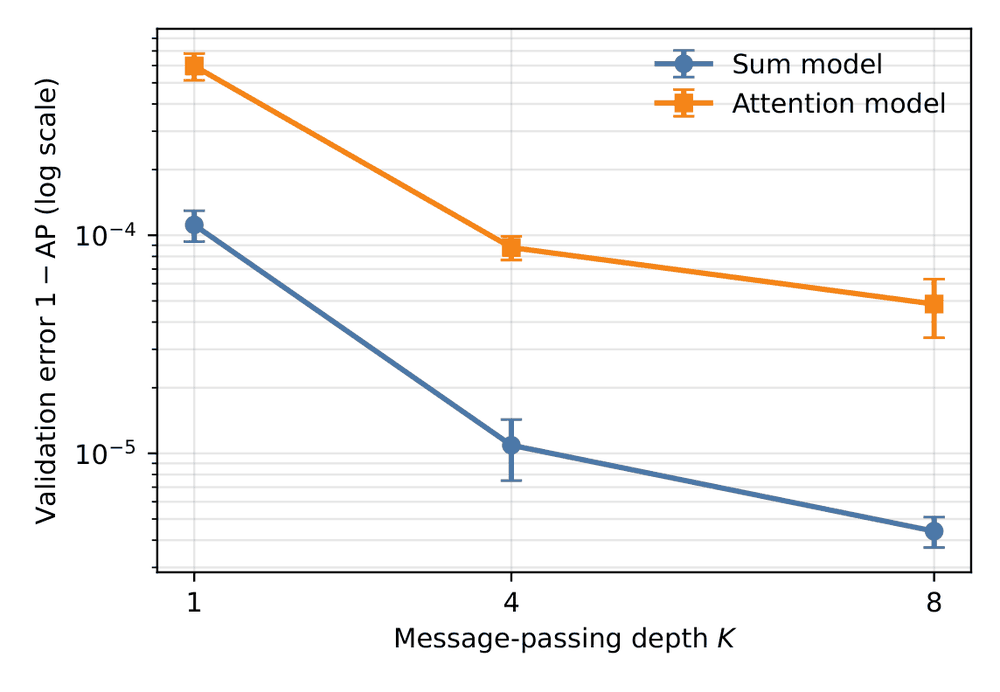
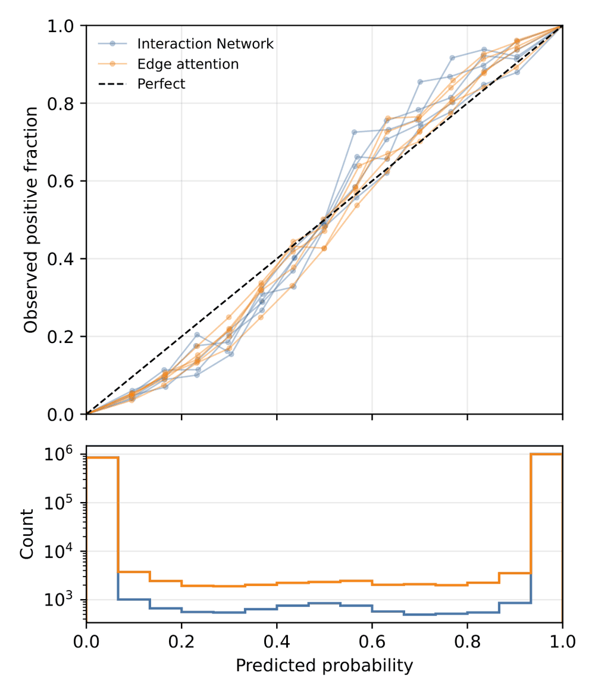
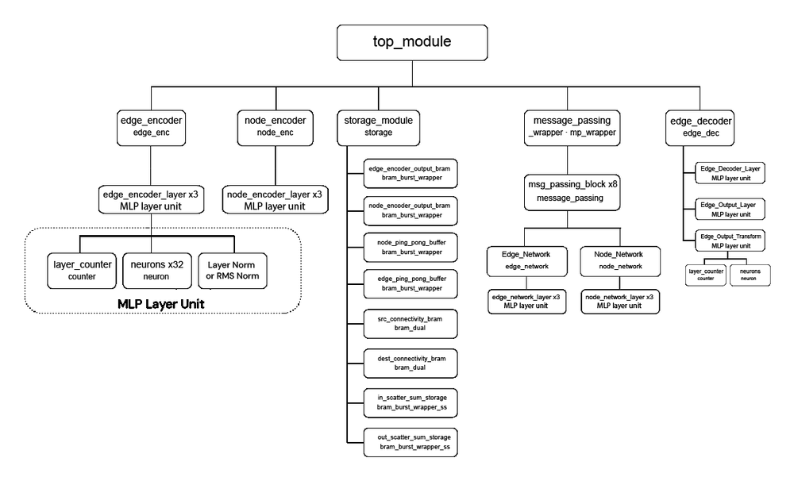
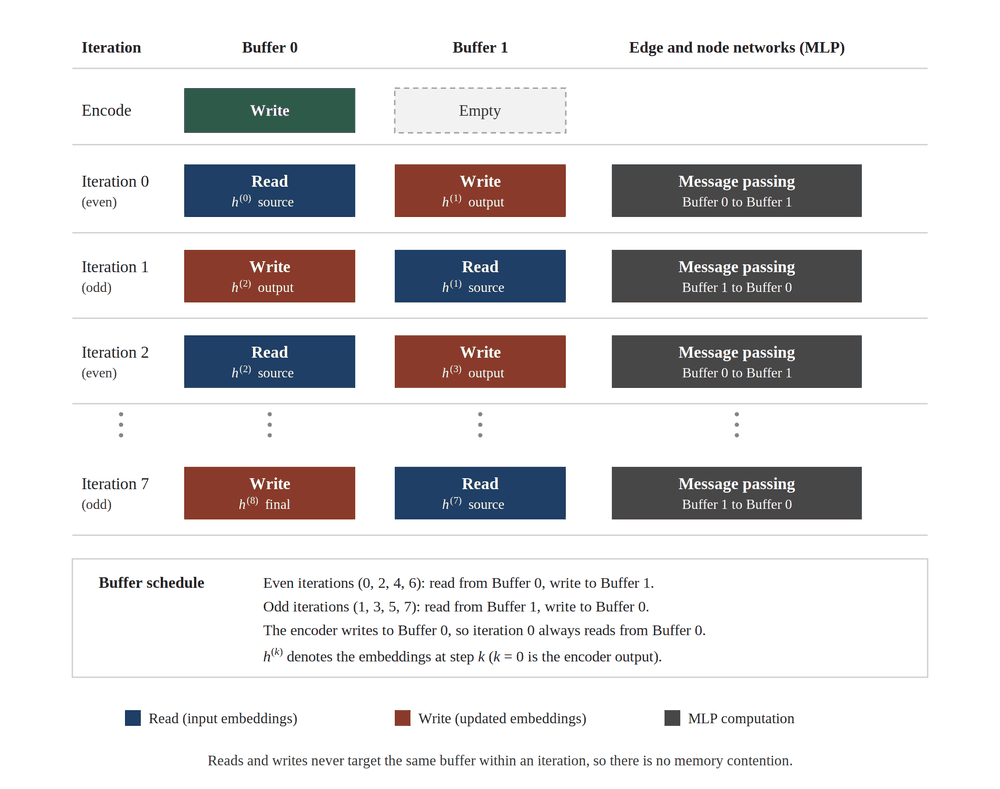
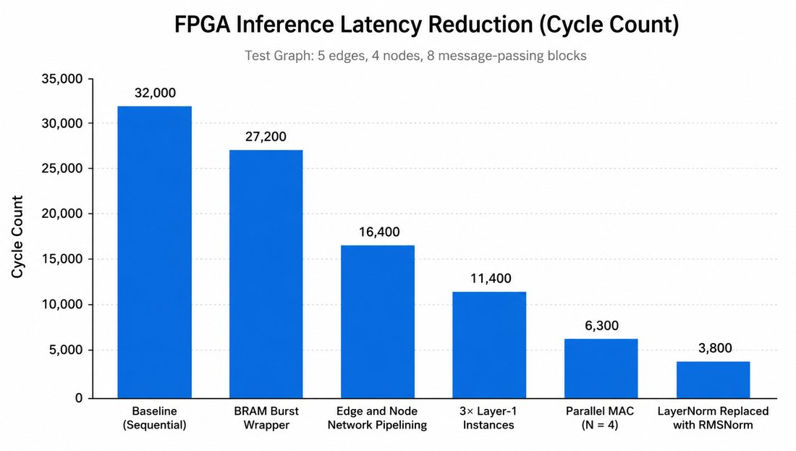
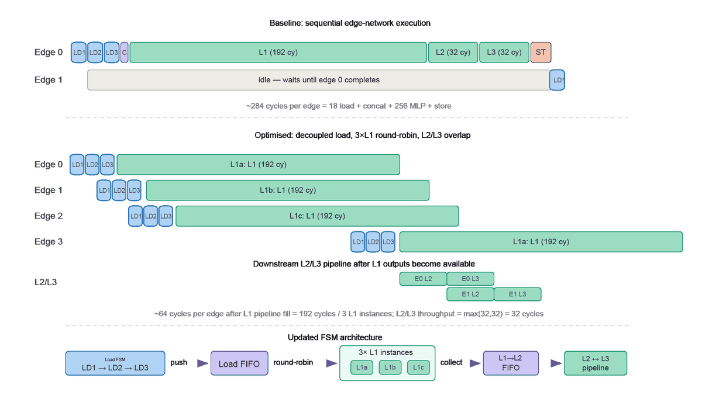
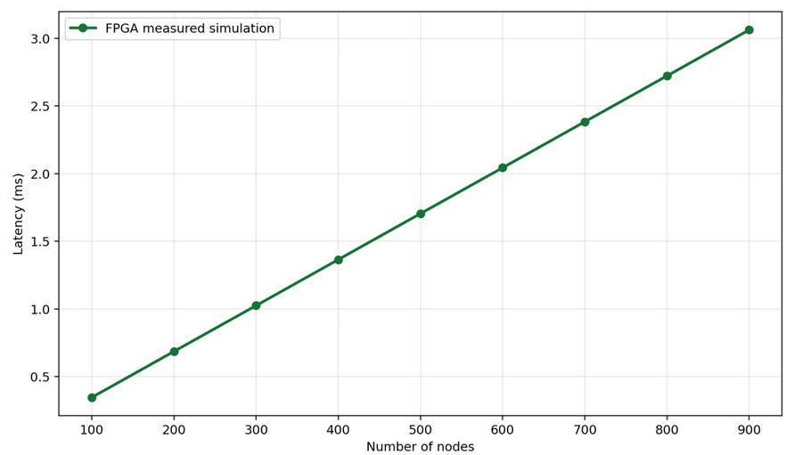
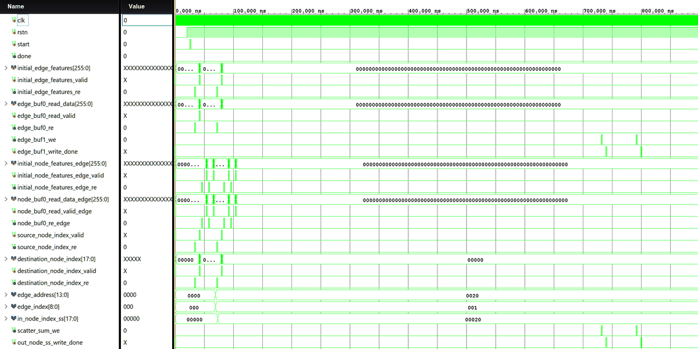

Bachelor's thesis · CERN ATLAS collaboration · May 2025 to Jul 2026
Graph neural networks for real-time particle tracking on FPGA
Supervision and collaboration: Dr. Basanta Joshi (IOE Pulchowk), Dr. Santosh Parajuli (University of Illinois Urbana-Champaign) and Dr. Suyog Shrestha (Washington College).
The problem
Every collision at the Large Hadron Collider sends charged particles through the detector, leaving thousands of hits. Reconstructing their paths is one of the most demanding computing tasks at the LHC, and after the High-Luminosity upgrade the ATLAS Event Filter must handle about a million events per second. A graph neural network can do this by treating hits as nodes and candidate links between hits as edges, then deciding which edges are real. The question is whether such a network can be both accurate enough and fast enough on FPGA hardware.
1. Choosing the model
I trained and compared two graph networks that differ only in how a hit combines messages from its neighbours: an Interaction Network, which adds them up, and an edge-conditioned graph attention network, which learns a weighted average. In my thesis setup, attention reached higher recall (0.989 against 0.903) and the Interaction Network higher precision (0.971 against 0.899).
A common assumption is that attention should help. To test it properly, I ran a controlled study on TrackML simulation under a fixed protocol with a dated record of changes: five seeds, validation-only model selection, and two held-out test sets, with uncertainty from resampling whole events. Summation won on every seed and both test sets, made fewer than a third as many edge errors (421 against 1,444 of 375,406 test edges), stayed ahead at 1, 4 and 8 rounds of message passing, and was slightly better calibrated. It was also about 1.75 times faster in GPU timing.


These results, together with hardware cost, decided the design: attention's softmax is expensive in fixed-point arithmetic, while summation maps simply onto hardware. I built the Interaction Network.
2. Designing the accelerator
I wrote the accelerator by hand in Verilog, rather than generating it with a high-level synthesis tool, so I could control every cycle. It runs at 8-bit fixed point on an AMD Alveo U250. Encoders turn raw hit and edge features into 32-wide embeddings, eight message-passing blocks update them, and a decoder scores each edge.


3. Making it fast
Starting from a simple sequential design, I applied seven architectural changes one at a time and measured each: overlapping memory access with computation, pipelining the edge and node networks, three parallel first-layer units, four-way multiply-accumulate, and a cheaper normalization. On a small reference graph the cycle count fell from 32,000 to 3,800, an 8.42 times reduction. The memory changes gave about 60% of the saving.


4. Checking that it is correct and how it scales
I exported reference values from the PyTorch model at six internal points, from the encoder outputs to the final edge scores, and compared the RTL signals against them in five testbenches. Latency grows roughly in a straight line with graph size: a graph of 500 nodes and 1,000 edges takes about 1.7 ms at the nominal 250 MHz clock.


Limitations and open problems
The 8.42 times figure is a reduction in clock cycles in simulation, not a measured wall-clock speed-up on the card. A build with smaller graph memories places and routes, but misses its 4 ns timing target by 0.775 ns, mostly because of routing delay. Latency for a 500-node graph is still 17 to 20 times above a 100 microsecond goal. Closing that gap is the next step, and both manuscripts report it openly.